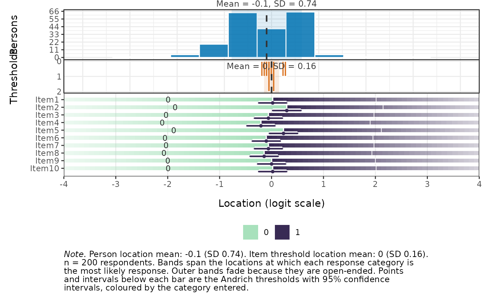

Draws a targeting plot, a Wright map (Wright & Stone, 1979), in three panels on a shared logit scale:
Top: a histogram of the person locations, with a line for the mean (or median) and shading for ±1 SD (or ±1 MAD).
Middle: an inverted histogram of the item threshold locations, with the same summaries.
Bottom: one bar per item, either partitioned into response-category bands (
panel = "categories", the default) or drawn as a dot-and-whisker plot of the individual thresholds (panel = "thresholds").
Usage
RMtargeting(
data,
panel = c("categories", "thresholds"),
robust = FALSE,
sort_items = c("data", "location"),
bins,
xlim = c(-4, 4),
ci_level = 0.95,
category_labels = NULL,
person_fill = "#0072B2",
threshold_fill = "#D55E00",
viridis_option = "G",
viridis_begin = 0.9,
viridis_end = 0.2,
row_gap = NULL,
height_ratios = c(3, 2, 5),
output = "patchwork"
)Arguments
- data
A data.frame or matrix of item responses, items scored from 0. Missing values (
NA) are allowed. Person locations use the items each respondent answered.- panel
Character string selecting the bottom panel.
"categories"(the default) draws each item as a bar partitioned into response-category bands, with the threshold estimates and their confidence intervals below it."thresholds"draws the dot-and-whisker plot of item thresholds that was the only option before version 1.3.0.- robust
Logical. If
FALSE(the default), histogram annotations use mean ± SD. IfTRUE, median ± MAD is used instead.- sort_items
Character string controlling item ordering on the y-axis of the bottom panel.
"data"(the default) preserves the column order indata(first item at top)."location"sorts items by their average threshold location (easiest at top, hardest at bottom).- bins
Integer. Number of bins for both histograms. Default: the number of distinct scores divided by 2 (rounded up), at least 11.
- xlim
Numeric vector of length 2. Initial lower and upper limits for the shared x-axis. Automatically expanded if any person or item threshold values fall outside these limits.
- ci_level
Numeric. Confidence level for the item threshold error bars. Default is
0.95(95% CI). Set toNULLto hide error bars.- category_labels
Optional character vector of labels for the response categories, in ascending order and one per category. Used for the legend of the
"categories"panel. DefaultNULLuses the category scores.- person_fill
Fill colour for the person histogram. Default
"#0072B2"(blue).- threshold_fill
Fill colour for the item threshold histogram, and for the dot-and-whisker panel. Default
"#D55E00"(vermillion).- viridis_option
Character. Viridis palette option for the category bands. Default
"G"(mako).- viridis_begin, viridis_end
Numeric in \([0, 1]\). Start and end points of the viridis palette for the category bands. Defaults
0.9and0.2, which runs the palette from light to dark so that higher categories are darker.- row_gap
Numeric. Vertical spacing between item rows in the
"categories"panel. DefaultNULLuses1, widened to1.18when at least one category collapses, so that its label has room above the bar.- height_ratios
Numeric vector of length 3, the relative heights of the top (persons), middle (thresholds) and bottom panels. Default
c(3, 2, 5).- output
Character string.
"patchwork"(the default) returns the combined patchwork plot."list"returns a named list of the three ggplot objects (p1,p2,p3) for further customisation.
Value
If
output = "patchwork": apatchworkobject (combinedggplot).If
output = "list": a named list with elementsp1(person histogram),p2(threshold histogram), andp3(the bottom panel selected bypanel).
Details
The top and middle panels form a back-to-back histogram that shows whether the items are targeted to the sample. The bottom panel places the items on the same scale, so the category bands show which response is the most likely one where the persons are.
Estimation. If every response category of every item has at
least 3 responses, the thresholds and their standard errors are estimated
by conditional maximum likelihood (CML) with psychotools::pcmodel() (a
dichotomous item is a 2-category partial credit model). Otherwise the
function uses marginal maximum likelihood (MML) with mirt::mirt()
(itemtype = "Rasch"), which is more stable with sparse categories, and
says so in a message. In both cases the thresholds are centred on their
mean.
Person estimates are obtained by Warm's weighted likelihood (WLE) from the fitted item thresholds, consistent with the rest of the package. WLE is finite at extreme scores, so all-zero and perfect responders are located rather than dropped.
Confidence intervals for the thresholds are Wald intervals,
estimate ± z × SE, with z the standard normal quantile for
ci_level.
Category bands. With panel = "categories", each band spans the
locations at which its response category is the most likely response. When
an item's thresholds are ordered these boundaries are the Andrich
thresholds themselves. When they are not, the disordered run is pooled by
averaging, and the categories it skips over, which are never the most
likely response at any location, collapse to a red tick labelled with the
category number. Red arrows below the bar give the size of each threshold
disorder in logits. Ordered thresholds therefore leave no red marks.
The two outer bands are open-ended and fade towards the panel edge, since the lowest and highest categories have no outer boundary.
The ggplot2 and patchwork packages must be installed (they are in Suggests).
See also
RMitemHierarchy(), RMitemCatProb(), RMitemCatFit() for a
test of the response categories, RMreliabilityCurve() for precision
along the same scale.
Examples
# \donttest{
if (requireNamespace("ggplot2", quietly = TRUE) &&
requireNamespace("patchwork", quietly = TRUE)) {
# Polytomous example
set.seed(42)
sim_data <- as.data.frame(
matrix(sample(0:3, 200 * 8, replace = TRUE), nrow = 200, ncol = 8)
)
colnames(sim_data) <- paste0("Item", 1:8)
# Default: category bands, mean/SD, data order, 95% CI
RMtargeting(sim_data)
# Category bands with labels
RMtargeting(sim_data, category_labels = c("Never", "Sometimes",
"Often", "Always"))
# The dot-and-whisker panel
RMtargeting(sim_data, panel = "thresholds")
# Robust (median/MAD), sorted by location, 84% CI
RMtargeting(sim_data, robust = TRUE, sort_items = "location",
ci_level = 0.84)
# Get list of sub-plots for customisation
plots <- RMtargeting(sim_data, output = "list")
plots$p1 + ggplot2::ggtitle("My custom title")
# Dichotomous example
sim_bin <- as.data.frame(
matrix(sample(0:1, 200 * 10, replace = TRUE), nrow = 200, ncol = 10)
)
colnames(sim_bin) <- paste0("Item", 1:10)
RMtargeting(sim_bin)
}

# }